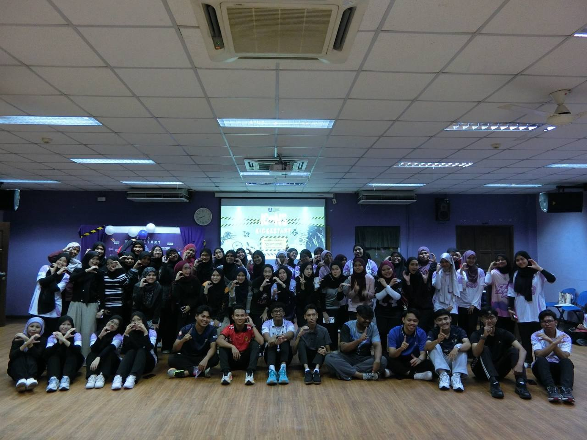
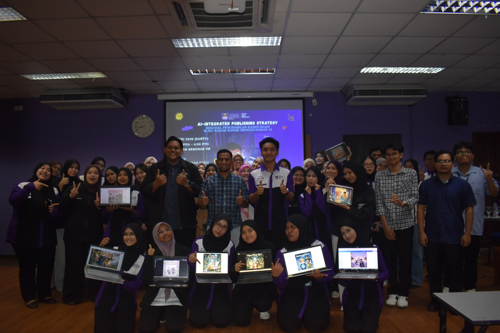
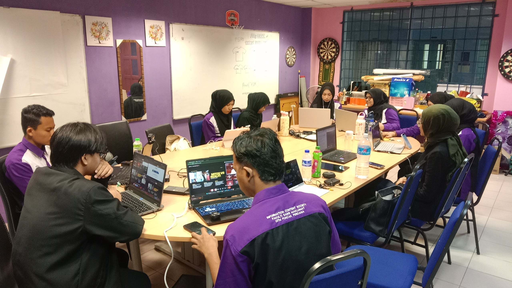
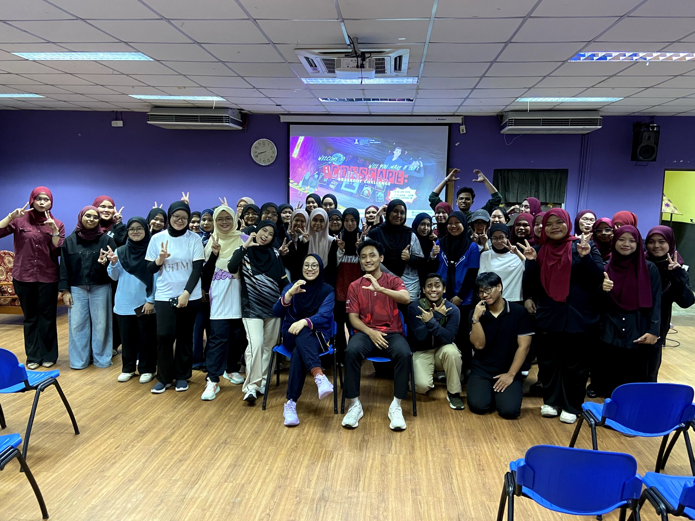
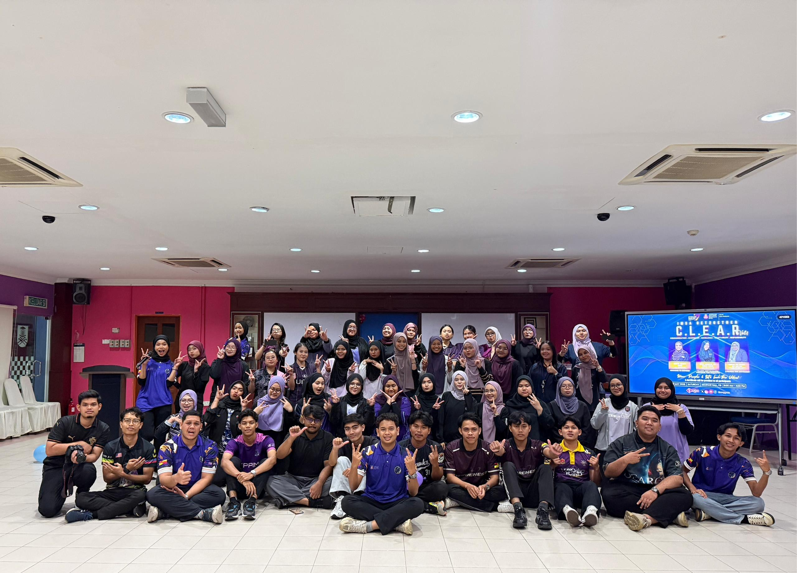
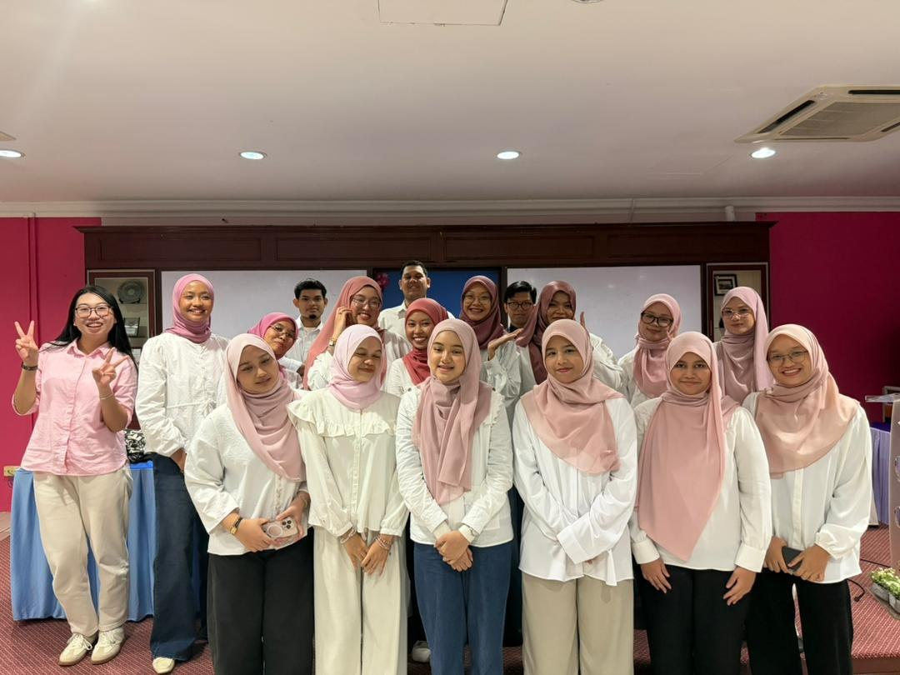
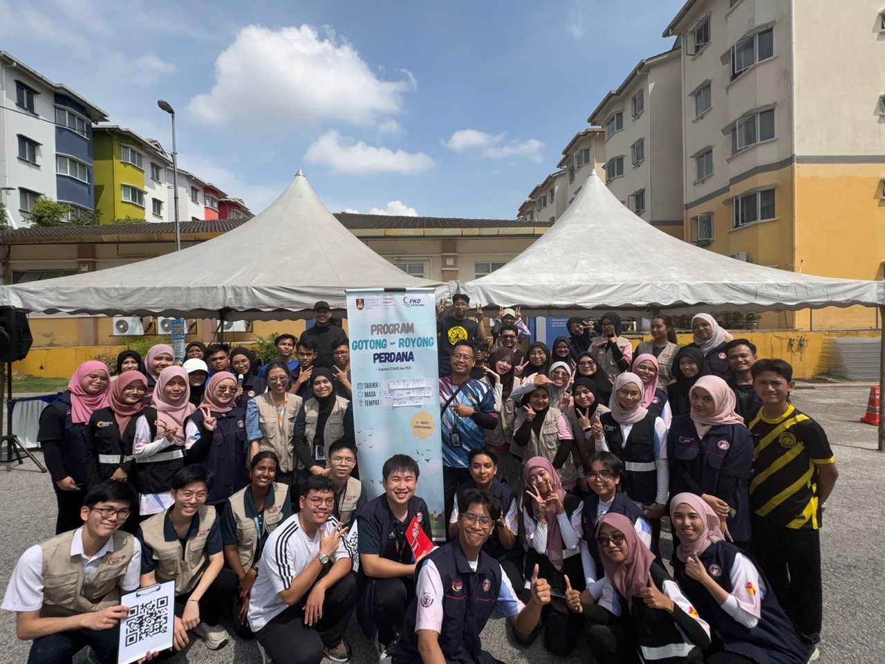

Experience
My Experience
Through academic projects, extracurricular activities, and practical experiences, I have developed valuable skills that contribute to my personal and professional growth. These experiences have strengthened my ability to work collaboratively, solve problems, and adapt to different challenges.
Professional Experience
Career Development (Present)
✧ Currently seeking opportunities to gain industry experience through internships, projects, and professional collaborations.
Academic Projects
E-Resume Website Development (2026)
- ✧ Developed a personal e-resume website using HTML and CSS.
- ✧ Applied semantic HTML and responsive design principles.
- ✧ Focused on accessibility and user-friendly navigation.
Digital Magazine Project (2026)
- ✧ Created a themed digital magazine.
- ✧ Designed layouts and managed digital content.
- ✧ Enhanced creativity and content planning skills.
Educational Videographic Project (2026)
- ✧ Produced informative multimedia content.
- ✧ Applied video editing and storytelling techniques.
- ✧ Strengthened communication and presentation skills.
Leadership & Activities
Faculty & Club Activities
- ✧ Participated in university programs and events.
- ✧ Collaborated with team members in organizing activities.
- ✧ Developed teamwork and communication skills.
Skills & Knowledge Gained
Technical Skills
- ✧ HTML & CSS
- ✧ Web Design
- ✧ Microsoft Office
- ✧ Information Management
- ✧ Digital Content Creation
Professional Skills
- ✧ Communication
- ✧ Teamwork
- ✧ Leadership
- ✧ Problem Solving
- ✧ Time Management
My Participations In Many Programs (2026)
All of these are my involvement as a multimedia, technical, and program committee member and participant in several programs conducted throughout my 2nd semester.
The Pictures:






